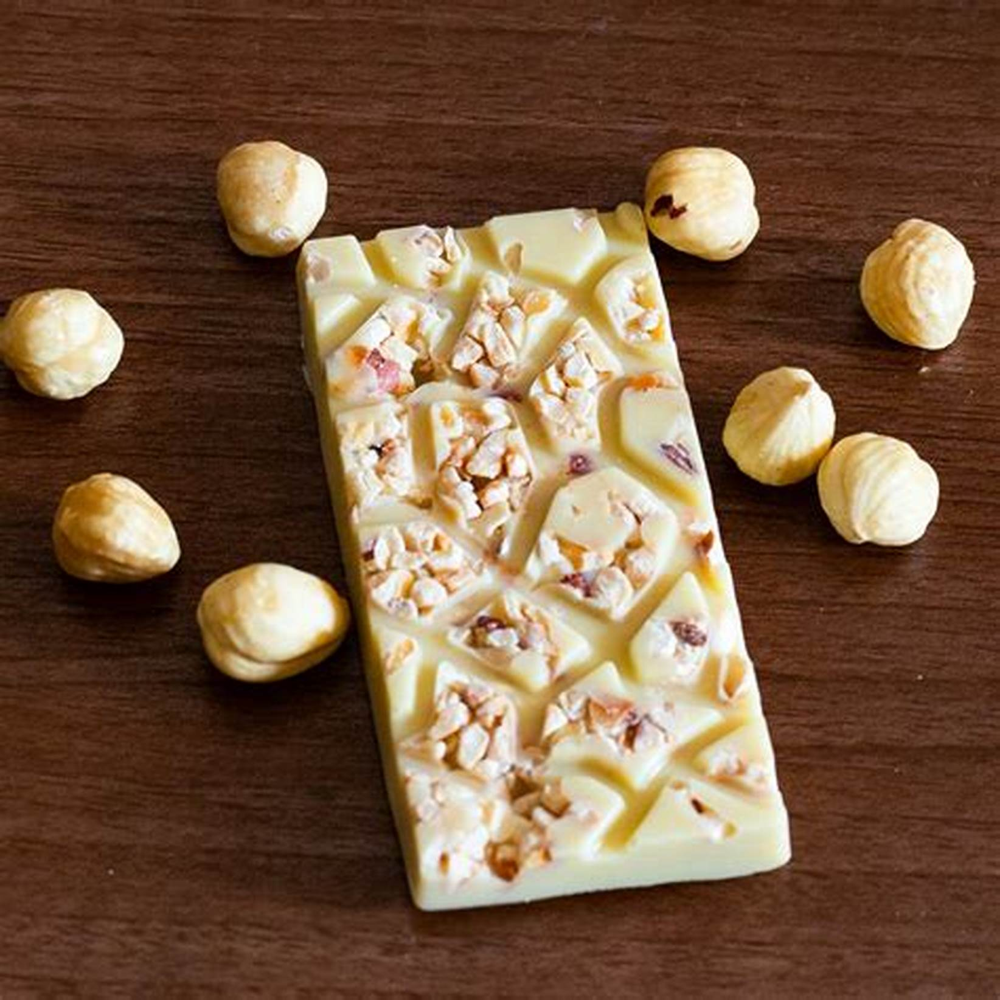

India is a big country with many states and regions. Each region offers a unique assortment of dishes and cooking techniques. Each regional cuisine uses its own locally grown herbs, spices, fruits and vegetables. These regional cuisines collectively combined together form the very delightful Indian Cuisine. The staple Indian foods are Rice, Wheat and Lentils. And no Indian dish is complete without spices. Indian food is a combination of all six tastes like sweet, sour, salty, bitter, spicy and astringent. In India different dishes are prepared for different festivals. Every festival tends to be complete only when special food associated with that festival is cooked on that day. Like Holi can not be complete without Gujhiya and Eid without Sewai. India is the only country in the world where there is Unity in Diversity not only its culture & religion but also its cuisine.
